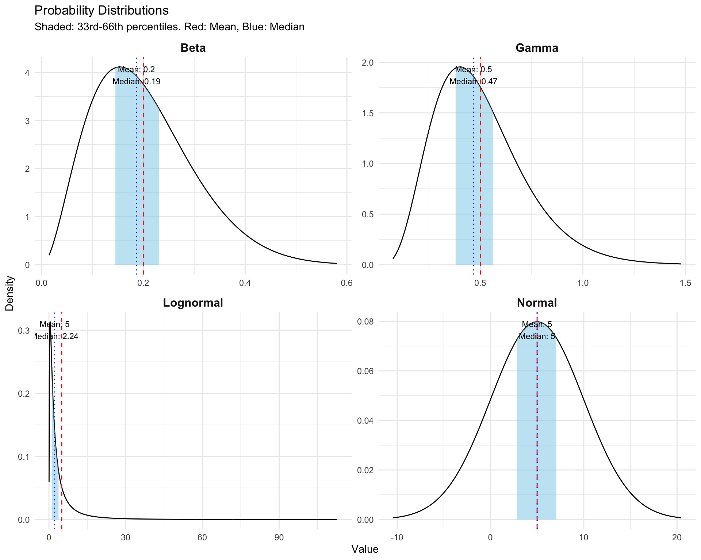
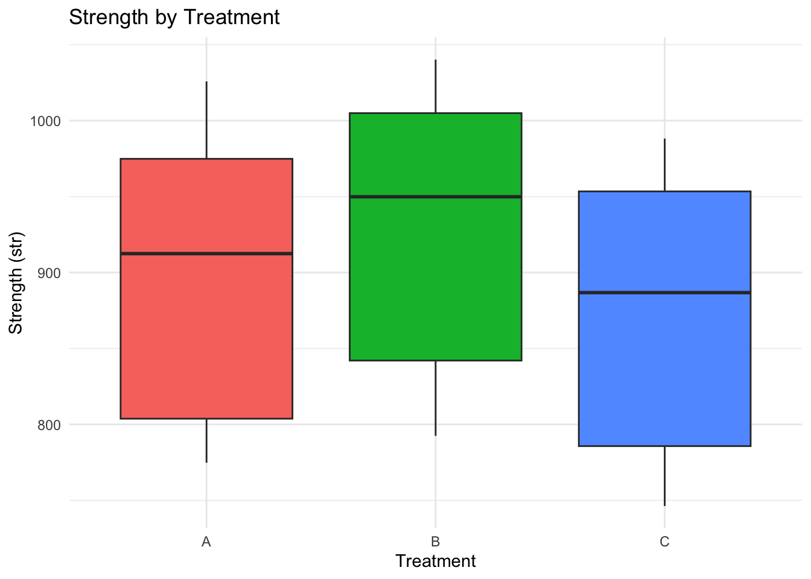
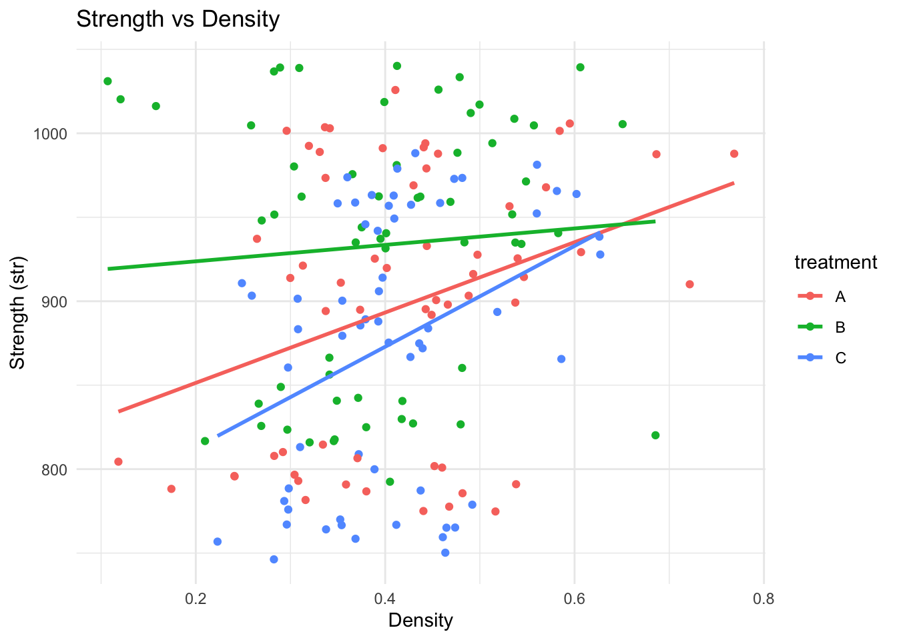
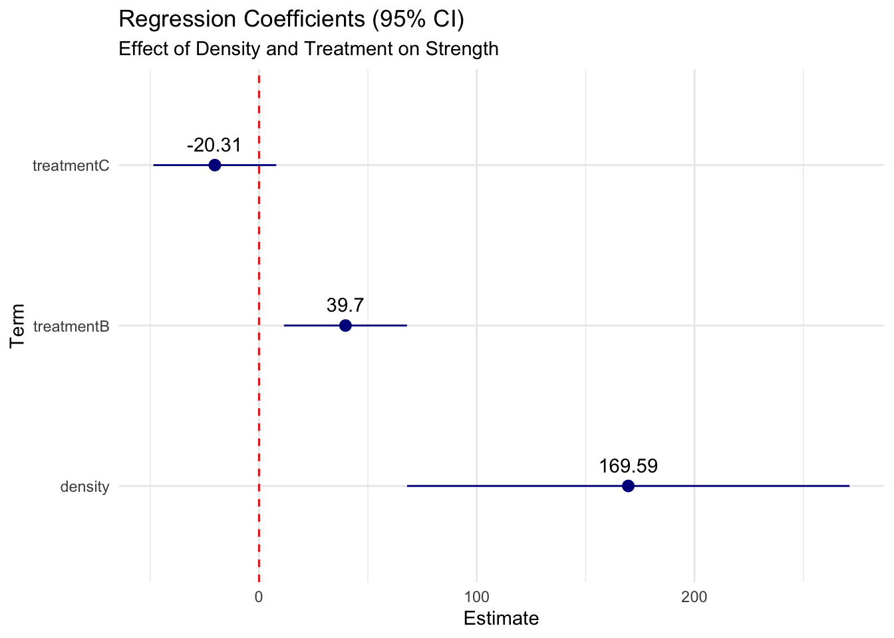
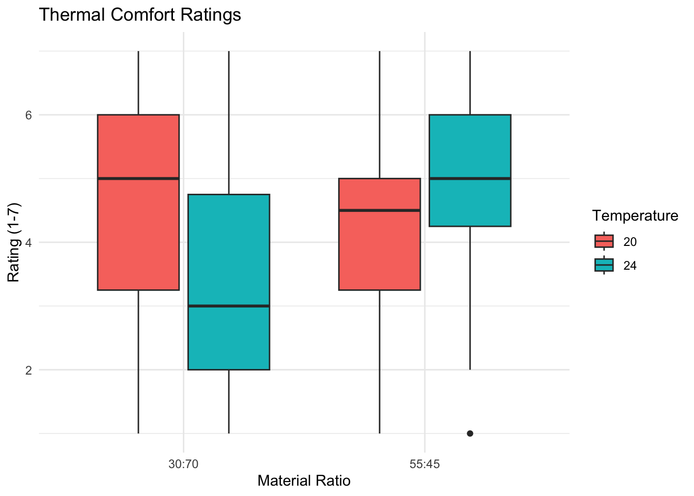
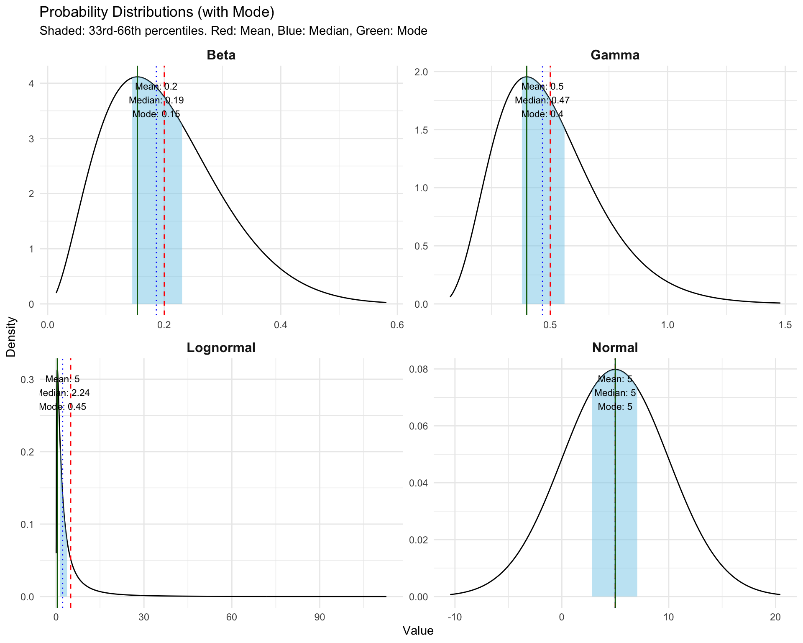

# loading necessary libraries
library(tidyverse)
library(fs)
library(broom)
library(gt)
library(emmeans)
# Setting a consistent theme for all plots
theme_set(theme_minimal())DSP 1 - Final 2025/2026
Instructions
- Update the YAML Header with the information requested. Add a table of contents with depth 2.
- Change the filename to DPS1_Final_2025-2026_Lastname-studentID.(qmd and html)
- Complete the tasks as described below.
- If you use any packages we haven’t used in class, please explain why you chose them
- Use good coding practices, label your code chunks, provide explanatory comments, ensure it is easily readable.
- Observe the rules for AI. If you use it provide specific descriptions of how it was used as requested on the e-classroom, not only a general comment.
- Submit the .qmd file and .html file together through the e-classroom.
- The html file may be self-contained (check online for the yaml instruction) or submitted with the dependent folders/files. Make sure the file you submit can be opened and viewed in complete form with the files you submit.
Setup
Task 1 - Visualising distributions
Create a visualisation that displays the four distributions described below with the requested annotations.Use a theme other than the default.
Distributions: 1. Beta(3,12) 2. Gamma(5,10) 3. Lognormal(5,10) 4. Normal(5,5)
For each distribution:
- Fill in the area between the 33rd and 66th quantiles (i.e., 0.33, 0.66) so that the range is clearly differentiated from the rest of the distribution.
- Mark the mean and median on the chart (make sure it is clear which mark is the mean and which is the median)
- Annotate with the mean and median, rounded to 2 decimal points.
The charts should be combined into a single visualisation. The x-axis limits should make sure the distribution is clearly defined and easy to interpret.
# properties for each distribution
# Used lists to store parameters for flexibility
# Function to convert linear mean/sd to lognormal parameters
get_lognorm_params <- function(mean, sd) {
list(
meanlog = log(mean^2 / sqrt(sd^2 + mean^2)),
sdlog = sqrt(log(1 + (sd^2 / mean^2)))
)
}
# Lognormal(5,10) is interpreted as Linear Mean=5, Linear SD=10
# because log-scale params (meanlog=5, sdlog=10) result in an astronomical range.
ln_params <- get_lognorm_params(5, 10)
dists <- list(
# Beta(3,12) distribution
Beta = list(
fun = dbeta,
params = list(shape1 = 3, shape2 = 12),
qfun = qbeta,
range = c(0, 1),
stats = c(
mean = 3/(3+12),
mode = (3-1)/(3+12-2)
)
),
# Gamma(5,10) distribution
Gamma = list(
fun = dgamma,
# Assuming appropriate shape/rate params.
# If Gamma(5,10) means shape=5, rate=10, mean=0.5.
params = list(shape = 5, rate = 10),
qfun = qgamma,
range = c(0, 2),
stats = c(
mean = 5/10,
mode = (5-1)/10
)
),
# Lognormal(5,10) distribution
Lognormal = list(
fun = dlnorm,
params = ln_params,
qfun = qlnorm,
range = c(0, qlnorm(0.99, ln_params$meanlog, ln_params$sdlog)), # Auto-range
stats = c(
mean = 5,
mode = exp(ln_params$meanlog - ln_params$sdlog^2)
)
),
# Normal(5,5) distribution
Normal = list(
fun = dnorm,
params = list(mean = 5, sd = 5),
qfun = qnorm,
range = c(5 - 3*5, 5 + 3*5),
stats = c(
mean = 5,
mode = 5
)
)
)
# Helper function to generate data for plotting
generate_dist_data <- function(name, info) {
# determine x range
# Use 0.1% to 99.9% quantiles for better visualization
lb <- info$qfun(0.001, info$params[[1]], info$params[[2]])
ub <- info$qfun(0.999, info$params[[1]], info$params[[2]])
# For distributions starting at 0, limit lb
if(name %in% c("Beta", "Gamma", "Lognormal")) lb <- max(0, lb)
x <- seq(lb, ub, length.out = 1000)
# Calculate density
y <- do.call(info$fun, c(list(x = x), info$params))
# Quantiles for shading
q33 <- do.call(info$qfun, c(list(p = 0.33), info$params))
q66 <- do.call(info$qfun, c(list(p = 0.66), info$params))
# Exact Median
median_val <- do.call(info$qfun, c(list(p = 0.5), info$params))
# Mean and Mode (calculated/extracted)
mean_val <- info$stats["mean"]
mode_val <- info$stats["mode"]
# Create data frame
tibble(
Distribution = name,
x = x,
y = y,
q33 = q33,
q66 = q66,
mean = mean_val,
median = median_val,
mode = mode_val
)
}
# Combining all data
plot_data <- map_df(names(dists), ~generate_dist_data(., dists[[.]]))
# Plotting (Mean + Median only)
p_bgln <- ggplot(plot_data, aes(x, y)) +
geom_line(color = "black") +
geom_area(data = plot_data %>% filter(x >= q33 & x <= q66), fill = "skyblue", alpha = 0.5) +
geom_vline(aes(xintercept = mean), color = "red", linetype = "dashed") +
geom_vline(aes(xintercept = median), color = "blue", linetype = "dotted") +
geom_text(data = plot_data %>% distinct(Distribution, mean, median),
aes(x = median, y = Inf,
label = paste0("Mean: ", round(mean, 2), "\nMedian: ", round(median, 2))),
vjust = 1.5, size = 3, color = "black") +
facet_wrap(~Distribution, scales = "free") +
labs(
title = "Probability Distributions",
subtitle = "Shaded: 33rd-66th percentiles. Red: Mean, Blue: Median",
x = "Value",
y = "Density"
) +
theme(strip.text = element_text(face = "bold", size = 12))
# Display plot for distributions
p_bgln
Task 2 - Fit a regression and report the outcomes
Fit a regression to the data from fibre_reinforced.csv with str as the dependent variable with density and treatment as the independent variables. The data is from a study investigating using flax fibre cord treated with different materials as reinforcement in concrete.
- Visualise the raw data
- Choose an appropriate regression method and fit the regression a. State the appropriateness of your regression method for the data, including why you chose it
- Visualise the regression outputs, annotating the visualisation with relevant information.
- Use a table layout package (i.e., tinytables, gt, kable) to display the regression outputs. a. There should be two tables. The first should have the regression coefficients, the second should should contain comparisons between the treatments. b. Make sure the table contains relevant information to determine the confidence in the estimates and how strongly we believe the differences are non-zero.
- Write a summary of the findings, defining effect sizes. In this case an effect size of more than 10
# Loading Data
fibre_data <- read_csv("data/fibre_reinforced.csv")1. Visualising the raw data
# Boxplot of Strength by Treatment
p1 <- ggplot(fibre_data, aes(x = treatment, y = str, fill = treatment)) +
geom_boxplot() +
labs(title = "Strength by Treatment", y = "Strength (str)", x = "Treatment") +
theme(legend.position = "none")
# Scatter of Strength vs Density
p2 <- ggplot(fibre_data, aes(x = density, y = str, color = treatment)) +
geom_point() +
geom_smooth(method = "lm", se = FALSE) +
labs(title = "Strength vs Density", y = "Strength (str)", x = "Density")
p1
p2`geom_smooth()` using formula = 'y ~ x'

2. Fit Regression
Chosen method: Linear Regression. The dependent variable str (strength) is continuous. The predictors include a continuous variable (density) and a categorical variable (treatment). A linear model is appropriate to estimate the effect of treatment while controlling for density, assuming linearity and normality of residuals (which can be checked).
# Fit linear model
lm_model <- lm(str ~ density + treatment, data = fibre_data)
# Summary
summary(lm_model)
Call:
lm(formula = str ~ density + treatment, data = fibre_data)
Residuals:
Min 1Q Median 3Q Max
-162.01 -72.78 11.54 63.78 146.98
Coefficients:
Estimate Std. Error t value Pr(>|t|)
(Intercept) 826.23 23.87 34.609 < 2e-16 ***
density 169.59 51.48 3.295 0.00119 **
treatmentB 39.70 14.32 2.772 0.00617 **
treatmentC -20.31 14.29 -1.421 0.15717
---
Signif. codes: 0 '***' 0.001 '**' 0.01 '*' 0.05 '.' 0.1 ' ' 1
Residual standard error: 78.2 on 176 degrees of freedom
Multiple R-squared: 0.1372, Adjusted R-squared: 0.1225
F-statistic: 9.327 on 3 and 176 DF, p-value: 9.354e-063.Regression Outputs
# Extracting results with broom
tidy_results <- tidy(lm_model, conf.int = TRUE)
# Coefficient Plot
ggplot(tidy_results %>% filter(term != "(Intercept)"),
aes(x = estimate, y = term, xmin = conf.low, xmax = conf.high)) +
geom_pointrange(color = "darkblue") +
geom_vline(xintercept = 0, linetype = "dashed", color = "red") +
labs(
title = "Regression Coefficients (95% CI)",
subtitle = "Effect of Density and Treatment on Strength",
x = "Estimate",
y = "Term"
) +
geom_text(aes(label = round(estimate, 2)), vjust = -1)
4. Tables
Table 1: Regression Coefficients
tidy_results %>%
gt() %>%
tab_header(title = "Linear Regression Results", subtitle = "Dependent Variable: Strength") %>%
fmt_number(columns = c(estimate, std.error, statistic, conf.low, conf.high), decimals = 2) %>%
fmt_scientific(columns = p.value)| Linear Regression Results | ||||||
|---|---|---|---|---|---|---|
| Dependent Variable: Strength | ||||||
| term | estimate | std.error | statistic | p.value | conf.low | conf.high |
| (Intercept) | 826.23 | 23.87 | 34.61 | 1.89 × 10−80 | 779.11 | 873.34 |
| density | 169.59 | 51.48 | 3.29 | 1.19 × 10−3 | 68.00 | 271.19 |
| treatmentB | 39.70 | 14.32 | 2.77 | 6.17 × 10−3 | 11.44 | 67.97 |
| treatmentC | −20.31 | 14.29 | −1.42 | 1.57 × 10−1 | −48.52 | 7.90 |
Table 2: Comparisons between Treatments
# Pairwise comparisons
em_means <- emmeans(lm_model, pairwise ~ treatment)
em_contrasts <- as.data.frame(em_means$contrasts)
em_contrasts %>%
gt() %>%
tab_header(title = "Pairwise Comparisons of Treatments") %>%
fmt_number(columns = c(estimate, SE, t.ratio), decimals = 2) %>%
fmt_scientific(columns = p.value)| Pairwise Comparisons of Treatments | |||||
|---|---|---|---|---|---|
| contrast | estimate | SE | df | t.ratio | p.value |
| A - B | −39.70 | 14.32 | 176 | −2.77 | 1.69 × 10−2 |
| A - C | 20.31 | 14.29 | 176 | 1.42 | 3.32 × 10−1 |
| B - C | 60.01 | 14.28 | 176 | 4.20 | 1.24 × 10−4 |
5. Summary of Findings
Key Findings:
The regression analysis allows us to control for density while comparing treatments.
The following variables had an effect size greater than 10: - density: Estimate = 169.59 - treatmentB: Estimate = 39.7 - treatmentC: Estimate = -20.31
(See Table 2 for pairwise differences between treatments).
Task 3 - Read and combine files using purrr:map and fs
Using a combination of the fs package and purrr package (specifically using a map function - choose the appropriate function) to read the contents of multiple files into a dataframe or tibble. The files are in the thermal_comfort folder.
When reading the files, add columns that contain the two components extracted from the filename (the portion that does not include the extension or any path components): condition and date, separately. The file name identifies the condition id, the date of the measurements in the form “ConditionID-Date.csv”. Read the “conditions.csv” file separately, and merge the specific conditions into the combined dataframe or tibble you produced using a join function.
The final merged and joined file should have the following columns: date, subject_id, condition_id, rating, material_ratio, temperature in that order.
After reading in the file, make a visualisation and summary table (using, e.g., tinytable, gt, or kable) that represents the data appropriately grouping it by room condition (material ratio and temperature).
About the data:
This data is from a study examining thermal comfort using a standard scale. Participants spent 20 minutes in rooms with different environmental conditions (temperature, visual environment) then filled in the thermal comfort scale. The scale uses an ordinal scale from 1 to 7 with 1 representing discomfort and 7 representing a high degree of comfort.
# 1. Getting file paths
file_paths <- dir_ls("data/thermal_comfort", glob = "*.csv")
# 2. Function to read and annotate
read_and_annotate <- function(path) {
# Extract filename without extension
fname <- path_file(path) %>% path_ext_remove()
# Split 'ConditionID-Date'
parts <- str_split(fname, "-")[[1]]
cond_id <- parts[1]
date_val <- parts[2]
# Read CSV
read_csv(path, show_col_types = FALSE) %>%
mutate(
condition_id = cond_id,
date = date_val
)
}
# 3. Process all files with map_dfr
combined_ratings <- map_dfr(file_paths, read_and_annotate)
# 4. Read Loop Conditions
conditions_df <- read_csv("data/conditions.csv",
col_types = cols(
material_ratio = col_character(),
temperature = col_double(),
code = col_character()
))
# 5. Join Code
final_df <- combined_ratings %>%
left_join(conditions_df, by = c("condition_id" = "code")) %>%
select(date, subject_id, condition_id, rating, material_ratio, temperature)
# Show structure
glimpse(final_df)Rows: 120
Columns: 6
$ date <chr> "20251010", "20251010", "20251010", "20251010", "202510…
$ subject_id <chr> "A25", "A26", "A27", "A28", "A29", "A30", "A31", "A32",…
$ condition_id <chr> "A01", "A01", "A01", "A01", "A01", "A01", "A01", "A01",…
$ rating <dbl> 5, 4, 3, 4, 3, 6, 5, 1, 5, 5, 5, 4, 6, 3, 7, 5, 3, 4, 6…
$ material_ratio <chr> "30:70", "30:70", "30:70", "30:70", "30:70", "30:70", "…
$ temperature <dbl> 20, 20, 20, 20, 20, 20, 20, 20, 20, 20, 20, 20, 20, 20,…Visualisation and Summary
# Summary Table
summary_stats <- final_df %>%
group_by(material_ratio, temperature) %>%
summarise(
Mean_Rating = mean(rating, na.rm = TRUE),
Median_Rating = median(rating, na.rm = TRUE),
Count = n(),
.groups = "drop"
)
summary_stats %>%
gt() %>%
tab_header(title = "Thermal Comfort Ratings by Condition") %>%
fmt_number(columns = c(Mean_Rating), decimals = 2)| Thermal Comfort Ratings by Condition | ||||
|---|---|---|---|---|
| material_ratio | temperature | Mean_Rating | Median_Rating | Count |
| 30:70 | 20 | 4.53 | 5.0 | 30 |
| 30:70 | 24 | 3.37 | 3.0 | 30 |
| 55:45 | 20 | 4.17 | 4.5 | 30 |
| 55:45 | 24 | 5.07 | 5.0 | 30 |
# Visualization
ggplot(final_df, aes(x = material_ratio, y = rating, fill = factor(temperature))) +
geom_boxplot() +
labs(
title = "Thermal Comfort Ratings",
x = "Material Ratio",
y = "Rating (1-7)",
fill = "Temperature"
) +
theme_minimal()
Bonus - 5 extra points
Recreate the charts from Task 1 and add the mode of each distribution.
# Re-using plot_data from Task 1 by only adding the mode
ggplot(plot_data, aes(x, y)) +
geom_line(color = "black") +
geom_area(data = plot_data %>% filter(x >= q33 & x <= q66), fill = "skyblue", alpha = 0.5) +
geom_vline(aes(xintercept = mean), color = "red", linetype = "dashed") +
geom_vline(aes(xintercept = median), color = "blue", linetype = "dotted") +
# Mode line (Green, Solid)
geom_vline(aes(xintercept = mode), color = "darkgreen", linetype = "solid") +
geom_text(data = plot_data %>% distinct(Distribution, mean, median, mode),
aes(x = median, y = Inf,
label = paste0("Mean: ", round(mean, 2), "\nMedian: ", round(median, 2), "\nMode: ", round(mode, 2))),
vjust = 1.5, size = 3, color = "black") +
facet_wrap(~Distribution, scales = "free") +
labs(
title = "Probability Distributions (with Mode)",
subtitle = "Shaded: 33rd-66th percentiles. Red: Mean, Blue: Median, Green: Mode",
x = "Value",
y = "Density"
) +
theme(strip.text = element_text(face = "bold", size = 12))